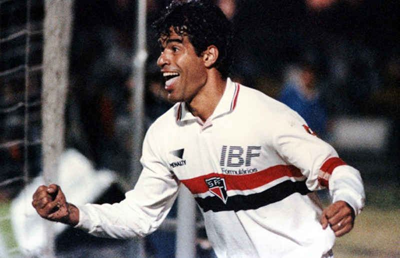

Rogério Ceni - O maior ídolo da história do São Paulo FC
Rogério Ceni é considerado o maior ídolo da história do São Paulo Futebol Clube. Goleiro-artilheiro único no mundo, Ceni marcou mais de 130 gols durante sua carreira, sendo especialista em cobranças de falta e pênaltis.
Defendeu as cores do Tricolor por 25 anos (1990-2015), conquistando mais de 20 títulos, incluindo as três Libertadores e os três Mundiais do clube. Sua despedida em 2015 emocionou milhões de torcedores ao redor do mundo.
Raí - O Terror do Morumbi

Raí - O maestro que conduziu o São Paulo aos primeiros títulos mundiais
Raí Souza Vieira de Oliveira, conhecido simplesmente como Raí, foi o grande maestro do São Paulo nos anos 90. Meio-campista de técnica refinada e visão de jogo excepcional, liderou a equipe nas conquistas da primeira Libertadores (1992) e do primeiro Mundial (1992).
Capitão carismático e líder nato, Raí é lembrado pelos torcedores como "O Terror do Morumbi" pela sua capacidade de decidir jogos importantes. Após passagem pela seleção brasileira e pelo Paris Saint-Germain, retornou ao São Paulo para encerrar sua carreira em 1998.
Outros Grandes Ídolos
Kaká: Meia-atacante que brilhou no São Paulo antes de conquistar a Europa. Ballon d'Or em 2007.
Lugano: Zagueiro uruguaio, capitão e líder da defesa tricolor por muitos anos.
Cafu: Lateral-direito bicampeão mundial pela seleção brasileira, ídolo da torcida são-paulina.
Leonardo: Lateral-esquerdo elegante, fez parte da geração dourada dos anos 90.